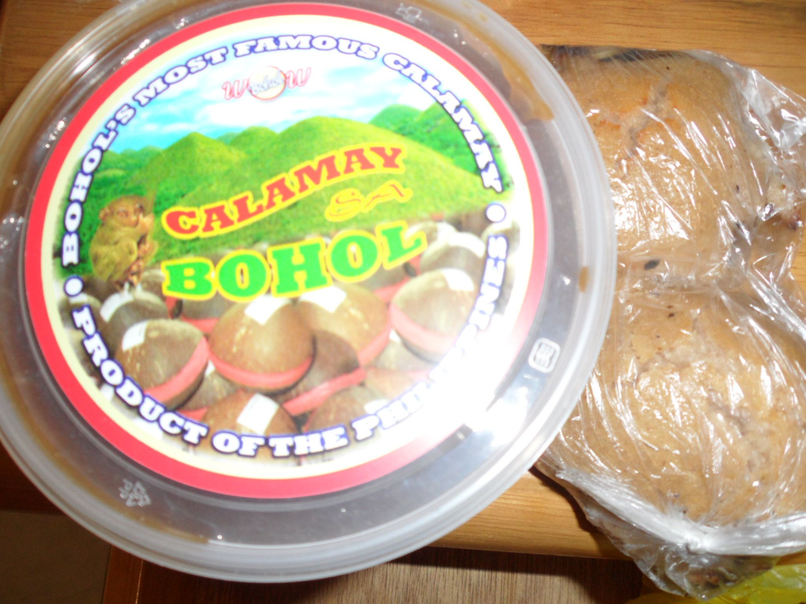
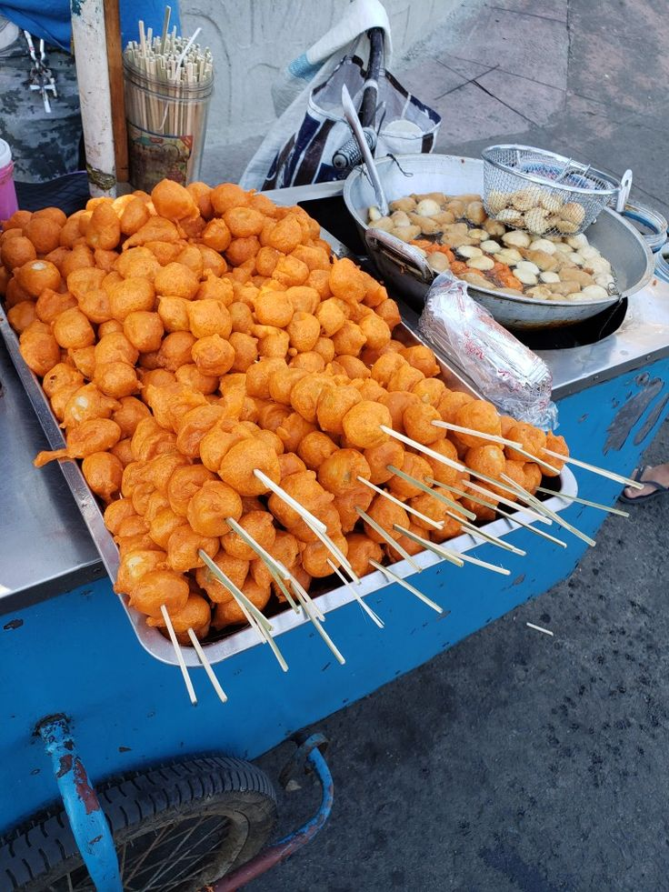
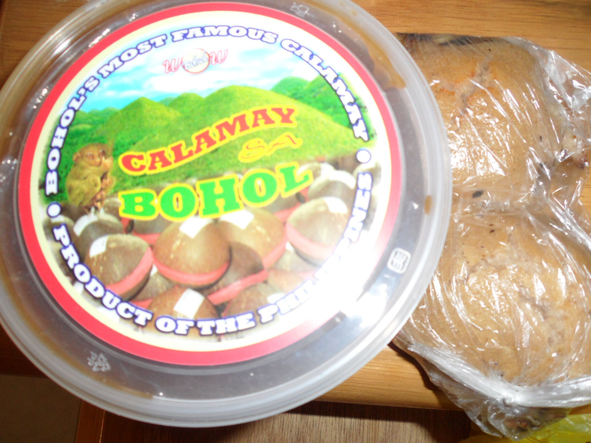
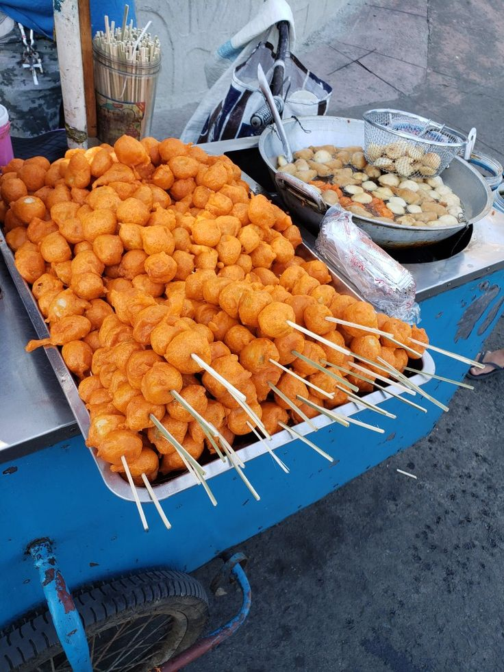

Ube for you and for everyone!

Ube cupcakes are delightful, moist treats made from ube, a vibrant purple yam popular in Filipino cuisine. These cupcakes have a unique flavor that combines the earthiness of yams with a subtle, sweet, and nutty taste. Their distinct purple hue makes them visually appealing and perfect for any celebration. Typically, ube cupcakes are topped with creamy ube-flavored frosting, which enhances their rich flavor profile. They can also be adorned with various toppings such as shredded coconut, toasted nuts, or a sprinkle of powdered sugar. Ube cupcakes offer a deliciously exotic twist on traditional cupcakes, making them a favorite among dessert enthusiasts.

Ube pandesal is a delightful twist on the traditional Filipino bread roll known as pandesal. These soft and fluffy buns are infused with ube, a purple yam that adds a vibrant color and a unique, mildly sweet flavor. The dough is typically enriched with ube halaya (ube jam), giving the bread a moist and slightly chewy texture. Often filled with a sweet ube filling or cream cheese, ube pandesal combines the comforting qualities of classic pandesal with the distinct taste of ube, making it a popular choice for breakfast, snacks, or dessert. Each bite offers a perfect balance of sweetness and a hint of earthiness, making ube pandesal a delightful treat for any time of day.

Bread with ube filling is a delightful pastry that combines the softness of freshly baked bread with the rich, creamy sweetness of ube, a purple yam popular in Filipino cuisine. The bread itself is light, fluffy, and slightly sweet, perfectly complementing the smooth and luscious ube filling inside. The filling is typically made from ube halaya (ube jam), which adds a vibrant purple color and a unique flavor that is both earthy and sweet. Each bite of this bread offers a harmonious blend of textures and flavors, making it an irresistible treat for breakfast, snacks, or dessert. The visually striking purple filling also adds an element of surprise and delight, making bread with ube filling a favorite among both kids and adults.